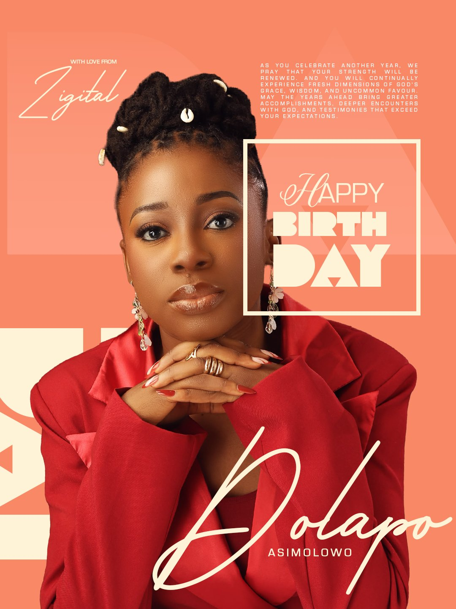
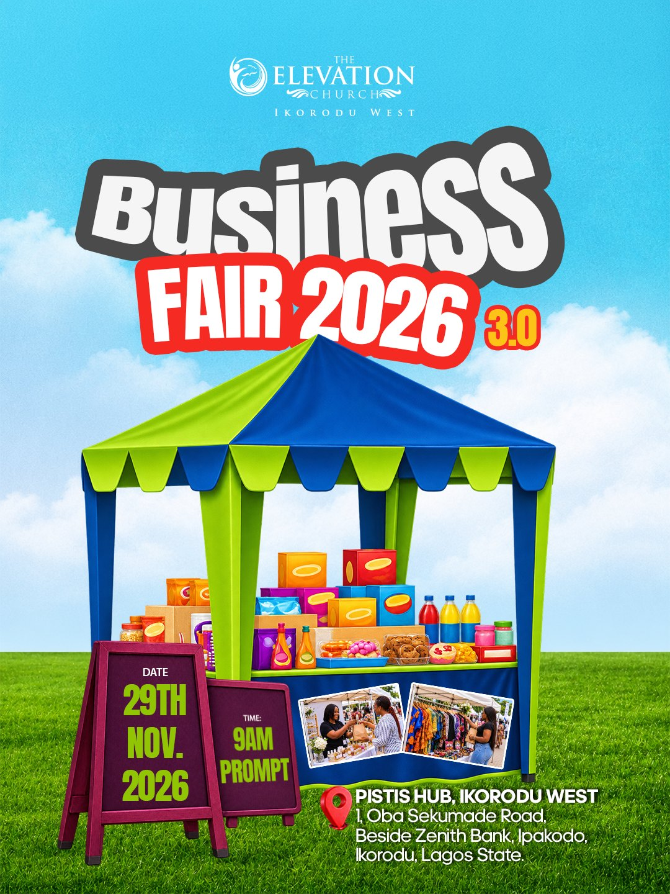
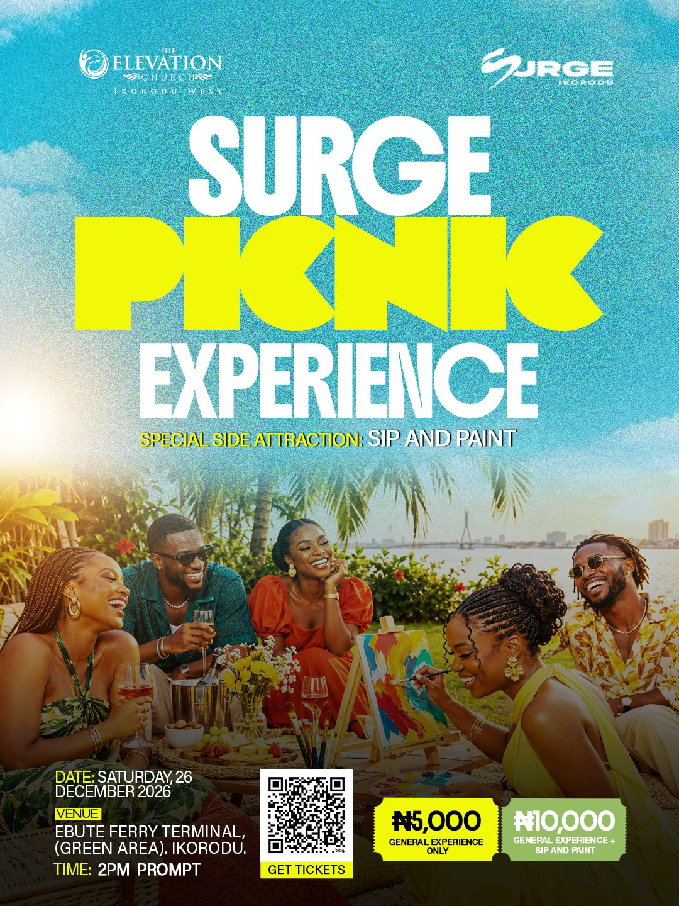

I’m Oghenero Okikie, a brand and graphic designer. I build identities, campaign visuals and design systems that help businesses look as good as they are. Below are three projects, each told from brief to result.
See case studiesStart a projectEach one follows the same path: the problem, what I found, what I made, and what changed for the client.
Birthday Design for Dolapo Asimolowo
A birthday graphic for Dolapo Asimolowo that celebrates her as a person, not as a template. It needed to carry a heartfelt prayer message and a sign-off, yet keep her portrait as the centrepiece.
Most birthday graphics follow one formula: a cutout, a few balloons and a “Happy Birthday” banner. I wanted something closer to a magazine cover, where typography, colour and photography share the page without competing, and the subject still feels like the star.
A warm coral background sets a celebratory mood and lets her deep red outfit stand out as the focal point. I paired expressive script lettering for her name with heavy geometric display type for “Birthday”, so the design feels both personal and bold. A cream frame behind the title and cropped geometric shapes at the edge add structure and depth, and her earring overlaps the frame to layer the portrait into the typography. The prayer message is set in small, widely spaced capitals as a quiet editorial detail, with the sign-off in script above it.

The Elevation Church: Business Fair 2026
The Elevation Church, Ikorodu West needed a flyer for Business Fair 2026, the third edition of its community business fair. It had to stop people scrolling, say “this is about business and opportunity” at a glance, and make the date, time and venue easy to find. It also had to sit comfortably beside the church’s identity.
An event flyer gets a few seconds of attention on a phone screen, usually shared on WhatsApp or Instagram. The event name and theme had to register first, and the practical details second, without the two competing.
The title leads: heavy, tilted type with red and grey outlines, readable against the sky. A blue and lime market stall carries the theme without a word of explanation, and the “3.0” badge signals a growing event. Date, time and venue sit together at the bottom on signboard shapes, so they scan in seconds. The church logo stays at the top, while the vibrant palette gives the event its own personality.

[Add a line from church leadership or a vendor about the event, or how the flyer was used across channels.]
SURGE Picnic Experience
SURGE Ikorodu was hosting an outdoor picnic with a sip and paint side attraction, and needed a flyer that would sell tickets. It had to feel social, creative and youthful, and it had to carry two ticket tiers, the venue, the date and a way to buy.
A lot of information had to fit on one image without looking like a notice board: two logos, a special attraction, two prices, a QR code, and the date, venue and time. The mood also mattered. People buy a ticket to an experience, so the flyer had to show them the afternoon before it told them the details.
The event name is stacked in oversized condensed type, with “PICNIC” in neon yellow as the loudest element. A bright cyan sky sets the mood and keeps the yellow vivid. Lifestyle photography of friends sharing drinks and painting by the water shows the atmosphere and the sip and paint hook at once. The prices are styled as ticket stubs, and the QR code is labelled “Get tickets” so the next step is obvious. Both the church and SURGE logos sit at the top, side by side.

[Add a line from the organisers, or how the flyer was used across channels.]
Clear services help the right clients self-select.
Strategy, logos, colour, type, voice and guidelines.
Campaigns, social, print, packaging, decks and editorial.
Templates and rules so your team stays consistent without me.
A predictable process builds trust before the first call.
Commercially driven brand and communications leader with 10+ years’ experience building, positioning, and scaling brands in complex, highly regulated environments. Track record of designing integrated brand strategies, leading data-driven marketing campaigns, and managing cross-functional and agency teams to deliver measurable growth in engagement, visibility, and market impact. Skilled at translating commercial objectives into digital-first campaigns and turning performance data into executive-ready insight.
Tools: Photoshop, Illustrator, Corel Draw, After Effects, Premier Pro, Figma, Canva, WordPress.
Tell me about the project, timeline and budget. I reply within two working days.
Email okikieoghenero@gmail.com